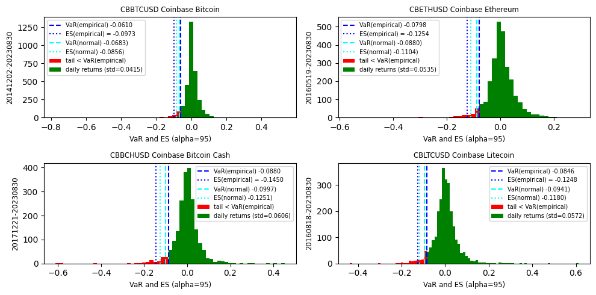
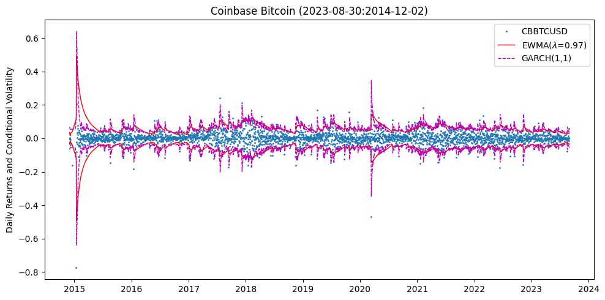

Conditional Volatility#
UNDER CONSTRUCTION
Value at Risk, Expected Shortfall, GARCH, EWMA
Cryptos: bitcoin, etherium
Historical VaR, ES
pof, LR: Theoretical ES, VaR - normal, t(6)
ARCH, GARCH, EWMA
Copulas
Power Laws, EVT
Bootstrapping with circular block
import numpy as np
from scipy.stats import chi2, norm, t, jarque_bera, kurtosis, skew
import pandas as pd
from pandas import DataFrame, Series
import matplotlib.pyplot as plt
import seaborn as sns
from finds.readers import Alfred
from finds.finance import kupiecLR, pof, halflife, RiskMeasure
from finds.misc import Show
from secret import credentials, paths
show = Show(ndigits=4, latex=None)
pd.set_option('display.max_rows', None)
VERBOSE = 0
#%matplotlib qt
imgdir = paths['images'] / 'ts'
alf = Alfred(api_key=credentials['fred']['api_key'], verbose=VERBOSE)
## Histogram, VaR and ES of Cryptocurrencies
labels = ['CBBTCUSD', 'CBETHUSD', 'CBBCHUSD', 'CBLTCUSD']
alpha = 0.95 # VaR parameter
out = {}
fig, axes = plt.subplots(2, 2, num=1, clear=True, figsize=(10, 5))
for label, ax in zip(labels, list(axes.ravel())):
rets = alf(label, log=1, diff=1).dropna()
sigma = rets.std()
risk_measure = RiskMeasure(rets, alpha=0.95)
var = risk_measure.value_at_risk()
es = risk_measure.expected_shortfall()
var_normal = risk_measure.value_at_risk(normal=True)
es_normal = risk_measure.expected_shortfall(normal=True)
n, bins, _ = ax.hist(rets[rets < var], color='red', bins=30)
stepsize = (bins[-1] - bins[0]) / (len(bins) - 1)
bins = np.arange(var, max(rets) + stepsize, stepsize)
ax.hist(rets[rets >= var], color='green', bins=bins)
ax.axvline(var, color='blue', ls='--')
ax.axvline(es, color='blue', ls=':')
ax.axvline(var_normal, color='cyan', ls='--')
ax.axvline(es_normal, color='cyan', ls=':')
ax.legend([f'VaR(empirical) {var:.4f}',
f'ES(empirical) = {es:.4f}',
f'VaR(normal) {var_normal:.4f})',
f'ES(normal) {es_normal:.4f})',
'tail < VaR(empirical)',
f'daily returns (std={sigma:.4f})'], fontsize='x-small')
ax.set_title(f"{label} {alf.header(label)[:60]}",
{'fontsize' : 'small'})
ax.set_ylabel(f'{min(rets.index)}-{max(rets.index)}',
fontsize='small')
ax.set_xlabel(f'VaR and ES (alpha={alpha*100:.0f})',
fontsize='small')
out[label] = {'std dev': np.std(rets, ddof=1),
'skewness': skew(rets),
'excess kurtosis': kurtosis(rets)-3,
'jarque-bera pvalue': jarque_bera(rets)[1]}
plt.tight_layout()
plt.savefig(imgdir / 'es.jpg')

# Non-normal: Jacque-Bera, excess kurtosis, mixtures
show(DataFrame(out).T)
| std dev | skewness | excess kurtosis | jarque-bera pvalue | |
|---|---|---|---|---|
| CBBTCUSD | 0.0415 | -1.8691 | 50.6324 | 0.0 |
| CBETHUSD | 0.0535 | -0.4478 | 5.3968 | 0.0 |
| CBBCHUSD | 0.0606 | -0.4462 | 12.0454 | 0.0 |
| CBLTCUSD | 0.0572 | 0.7669 | 9.8600 | 0.0 |
GARCH#
## GARCH(1,1) wrapper around rugarch
import rpy2.robjects as ro
from rpy2.robjects.packages import importr
from finds.misc import PyR
def rugarch(rets: Series, savefig: str = '') -> np.array:
rugarch_ro = importr('rugarch') # to use library rugarch
c_ = ro.r['c']
list_ = ro.r['list']
spec = ro.r['ugarchspec'](mean_model=list_(armaOrder=c_(0, 0),
include_mean=False))
model = ro.r['ugarchfit'](spec, data=PyR(rets.values).ro)
ro.r['show'](model)
if savefig:
for which in [4, 5, 10, 11]:
ro.r['plot'](model, which=which)
PyR.savefig(imgdir / f'{savefig}{which}.png')
return PyR(ro.r['sigma'](model)).values # fitted volatility values
## Retrive Bitcoin from FRED and plot GARCH, EWMA and Daily Returns
series_id = 'CBBTCUSD'
X = alf(series_id, log=1, diff=1).dropna()
X.index = pd.DatetimeIndex(X.index.astype(str), freq='infer')
Y = np.square(X)
lam = 0.97
asset = np.sqrt((Y.ewm(alpha=1 - lam).mean()).rename('EWMA')).to_frame()
asset['EWMA(0.94)'] = np.sqrt((Y.ewm(alpha=1 - 0.94).mean()))
asset['GARCH'] = rugarch(X)
*---------------------------------*
* GARCH Model Fit *
*---------------------------------*
Conditional Variance Dynamics
-----------------------------------
GARCH Model : sGARCH(1,1)
Mean Model : ARFIMA(0,0,0)
Distribution : norm
Optimal Parameters
------------------------------------
Estimate Std. Error t value Pr(>|t|)
mu 0.002039 0.000547 3.725 0.000195
omega 0.000082 0.000011 7.299 0.000000
alpha1 0.194184 0.017569 11.053 0.000000
beta1 0.785250 0.015994 49.096 0.000000
Robust Standard Errors:
Estimate Std. Error t value Pr(>|t|)
mu 0.002039 0.000604 3.3742 0.000740
omega 0.000082 0.000031 2.6541 0.007952
alpha1 0.194184 0.060987 3.1840 0.001453
beta1 0.785250 0.045039 17.4349 0.000000
LogLikelihood : 6038.942
Information Criteria
------------------------------------
Akaike -3.8208
Bayes -3.8131
Shibata -3.8208
Hannan-Quinn -3.8180
Weighted Ljung-Box Test on Standardized Residuals
------------------------------------
statistic p-value
Lag[1] 2.504 0.113554
Lag[2*(p+q)+(p+q)-1][2] 4.927 0.042536
Lag[4*(p+q)+(p+q)-1][5] 10.122 0.008565
d.o.f=0
H0 : No serial correlation
Weighted Ljung-Box Test on Standardized Squared Residuals
------------------------------------
statistic p-value
Lag[1] 0.04635 0.8295
Lag[2*(p+q)+(p+q)-1][5] 2.19280 0.5736
Lag[4*(p+q)+(p+q)-1][9] 3.00410 0.7583
d.o.f=2
Weighted ARCH LM Tests
------------------------------------
Statistic Shape Scale P-Value
ARCH Lag[3] 1.426 0.500 2.000 0.2324
ARCH Lag[5] 1.686 1.440 1.667 0.5449
ARCH Lag[7] 2.002 2.315 1.543 0.7170
Nyblom stability test
------------------------------------
Joint Statistic: 1.1778
Individual Statistics:
mu 0.31192
omega 0.32500
alpha1 0.08342
beta1 0.22086
Asymptotic Critical Values (10% 5% 1%)
Joint Statistic: 1.07 1.24 1.6
Individual Statistic: 0.35 0.47 0.75
Sign Bias Test
------------------------------------
t-value prob sig
Sign Bias 1.315 0.18856
Negative Sign Bias 1.346 0.17826
Positive Sign Bias 1.705 0.08829 *
Joint Effect 4.721 0.19340
Adjusted Pearson Goodness-of-Fit Test:
------------------------------------
group statistic p-value(g-1)
1 20 529.7 3.209e-100
2 30 537.6 5.292e-95
3 40 566.4 8.888e-95
4 50 579.2 1.058e-91
Elapsed time : 0.2695932
# Conditional Volatility Models EWMA(94), EWMA(97), GARCH(1, 1): Bitcoin
fig, ax = plt.subplots(num=1, clear=True, figsize=(10, 5))
ax.plot(X.shift(-1), ls='', marker='.', markersize=2)
ax.plot(norm.ppf(1 - alpha) * asset['EWMA'], lw=1, ls='-', c='r')
ax.plot(norm.ppf(1 - alpha) * asset['GARCH'], lw=1, ls='--', c='m')
ax.set_title(alf.header(series_id)
+ f" ({max(Y.index).strftime('%Y-%m-%d')}:"
+ f"{min(Y.index).strftime('%Y-%m-%d')})")
ax.set_ylabel('Daily Returns and Conditional Volatility')
ax.legend([series_id] + [f"EWMA($\lambda$={lam:.2f})"] + ['GARCH(1,1)'])
ax.plot(-norm.ppf(1 - alpha) * asset['EWMA'], lw=1, ls='-', c='r')
ax.plot(-norm.ppf(1 - alpha) * asset['GARCH'], lw=1, ls='--', c='m')
plt.tight_layout()
plt.savefig(imgdir / 'ewma.jpg')

Value at Risk#
# Statistical summary of conditional volatility models
y = X.shift(-1)
results = {}
for label, x in zip([series_id, 'EWMA(0.94)', f'EWMA({lam:.2f})','GARCH(1,1)'],
[1.0, asset['EWMA(0.94)'], asset['EWMA'], asset['GARCH']]):
if isinstance(x, (int, float)):
pof_ = pof((y / np.std(y))[126:], x) # skip first six months
else:
pof_ = pof(y[126:], x[126:]) # skip first six months
results[label] = {'std dev': np.std(y.div(x).dropna()),
'skewness': skew(y.div(x).dropna()),
'excess kurtosis': kurtosis(y.div(x).dropna()) - 3,
f'pof({int(100*alpha)})': pof_['s']/pof_['n'],
'pof p-value': pof_['pvalue']}
show(DataFrame.from_dict(results, orient='index'), caption=series_id)
| std dev | skewness | excess kurtosis | pof(95) | pof p-value | |
|---|---|---|---|---|---|
| CBBTCUSD | |||||
| CBBTCUSD | 0.0415 | -1.8686 | 50.6217 | 0.0349 | 0.0001 |
| EWMA(0.94) | 1.1386 | -1.0813 | 15.4336 | 0.0462 | 0.3257 |
| EWMA(0.97) | 1.0772 | -1.4521 | 17.8767 | 0.0425 | 0.0530 |
| GARCH(1,1) | 1.0249 | -0.7791 | 8.6911 | 0.0415 | 0.0279 |